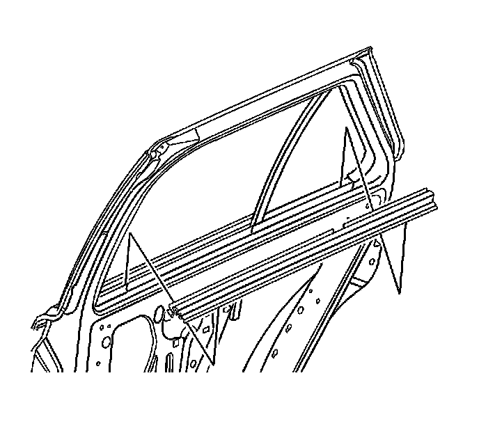
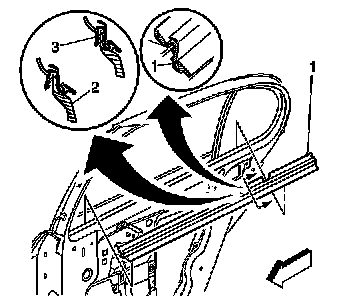

Rear Door Window Belt Inner Sealing Strip Replacement
Rear Door Window Belt Inner Sealing Strip Replacement
Removal Procedure

1. Lower the window to the full down position.
2. Remove the door trim panel. Refer to Rear Side Door Trim Panel Replacement (Service and Repair) .
3. Starting at the forward end of the inner belt sealing strip, pull upward to release the strip.
Installation Procedure

Important: When reusing the inner belt sealing strip, the flange mounting area must be pinched together in order to counteract the splaying effect when removed. Use a thumb and an index finger to pinch the carrier (3) back together.
1. Work from one end of the sealing strip to the other.
2. Position the inner belt sealing strip over the flange of the door inner panel.
Important: Do not distort the seal strip.
3. Press downward to engage the sealing strip the entire length of the door.
4. Install the door trim panel. Refer to Rear Side Door Trim Panel Replacement (Service and Repair) .